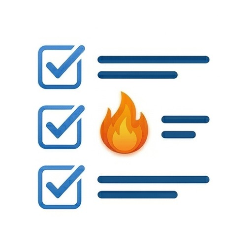
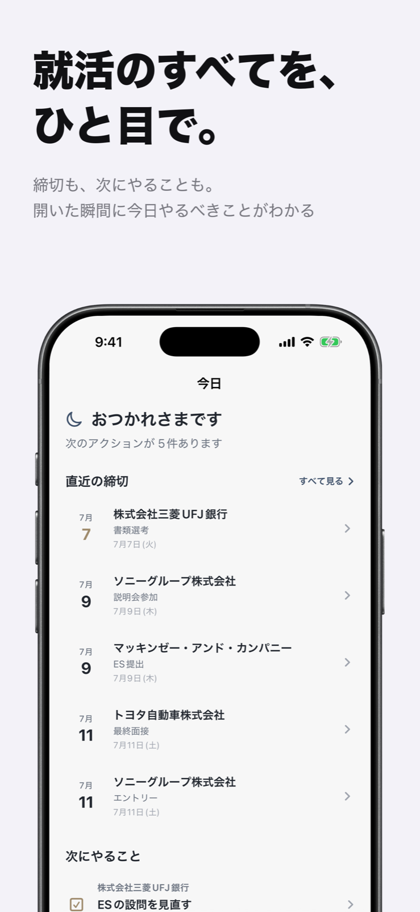
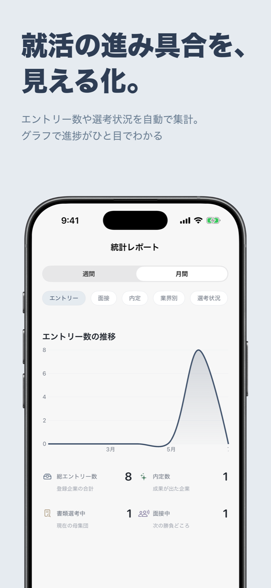

企業ごとに管理
応募先、選考段階、メモを企業単位でまとめられます。

就活マネージャー
就活管理
JOB HUNTING DESK · 仕事・学習
企業ごとの選考状況、締切、面接予定をひとつにまとめる就職活動専用の進行管理アプリです。


Decision surface
応募先、選考段階、メモを企業単位でまとめられます。
ESや適性検査など、次に必要な行動を予定へ置けます。
日程をカレンダーと一覧から確認できます。
応募の進捗を見渡し、次に集中する企業を選べます。
Made for you